MondoWrite
From chaos to an ordered world
All of MondoWrite, step by step: the canvas, the Bible, the Outline, the Manuscript, the Screenplay, the optional AI and the exports, all the way to a print-ready paperback.
MondoWrite is a writing workshop for novelists and screenwriters who like to build their story before they write it. You start by dropping your ideas anywhere, you connect them, you sort them out little by little, then you write. Hence its motto: from chaos to an ordered world.
Your project is a single set of cards and texts. The four views in the top bar are four ways of reading it: nothing is ever copied from one to another.
| View | What it is for |
|---|---|
| Canvas | The free board where ideas are born: cards you drop, connect with threads and gather in frames. |
| Bible | The entries of your world (characters, places, plots, themes…), sorted by type on their own, with the project cover at the top. |
| Outline | The order of the story: templates (three acts, Save the Cat…) to place scenes in, chapters and a timeline. |
| Manuscript | The text, scene by scene, laid out like a book. In a screenplay project this view becomes Screenplay, and the Outline lists the scenes in screenplay order. |
A scene created in the Outline immediately has its card on the canvas; a character written in the screenplay has its entry in the Bible; the text written in a Scene card is the text of the Manuscript.
The screenshots show the example project that comes with the app, Little Red Riding Hood by Charles Perrault (1697), illustrated with Gustave Doré’s engravings. Button names are written like this. Shortcuts are given for Windows and Linux with Ctrl; on a Mac, use ⌘ (Cmd) instead.
MondoWrite is a desktop application for macOS, Windows and Linux. The installers are published on the project’s releases page: github.com/sebastienpiconnier/MondoWrite/releases. Take the latest version, then the file for your system:
| System | File |
|---|---|
| Mac with Apple silicon (M1 and later) | MondoWrite_x.y.z_aarch64.dmg |
| Mac with an Intel processor | MondoWrite_x.y.z_x64.dmg |
| Windows | MondoWrite_x.y.z_x64-setup.exe (or the .msi) |
| Linux | .AppImage (any distribution), .deb (Debian, Ubuntu) or .rpm (Fedora) |
On a Mac, open the .dmg and drag MondoWrite into the Applications folder. On Windows, run the installer. On Linux, make the AppImage executable or install your distribution’s package.
If macOS refuses to open an app downloaded outside the App Store, right-click MondoWrite in Applications, choose Open and confirm. Windows may show a SmartScreen warning: More info, then Run anyway.
At launch, the app checks (at most once a day) whether a new version has been published. If so, a banner says so: Update downloads and installs the new version, after saving your project; MondoWrite restarts on its own. What’s new opens the version’s page, Later closes the banner.
You can also check yourself: Settings, Updates section, Check for updates (also in About MondoWrite). The Check for updates at launch box turns off the automatic check. Nothing is ever installed without your consent.
MondoWrite also works in a web browser, to discover the app. Projects are then kept in the browser’s storage, not in a folder: for real work, use the desktop app.
MondoWrite always opens on the projects page. It has three blocks: Your projects (the ones you have opened on this device), New project and You, the writer.
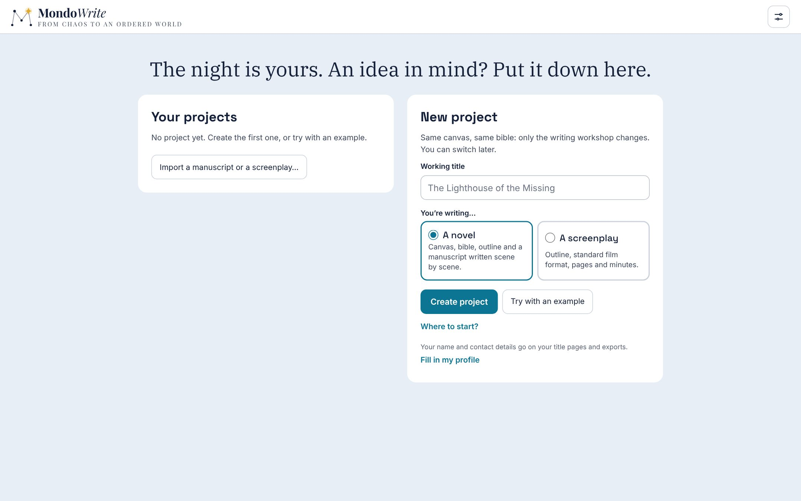
Fill in the You, the writer block once and for all: first name, last name, pen name (optional: the name you sign your work with, if it isn’t your own), email, phone, address, and, if you like, your Background and your Credits or publications (one work per line). This information stays on your device, never in a project. It is used to:
Once saved, the profile shrinks to your name; Edit my profile opens it again.
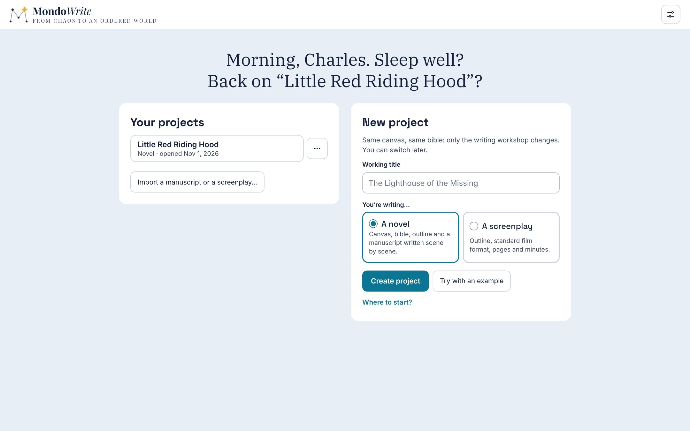
If the chosen folder already contains a MondoWrite project, the app opens it instead of overwriting it. Creating never overwrites anything.
Click a project in the list to open it. If opening takes a while (an iCloud project opened for the first time on the device, whose files are still arriving), a window shows how far along it is. Open folder… opens a project that isn’t in the list yet (copied from another computer, for example). On a computer, removing a project from the list deletes no file: it stays in its folder. On iPhone and iPad, the cross deletes the project after you confirm: its files are erased, from all your devices if it is in iCloud. Export it as a .zip first if you want to keep a copy.
Try with an example creates the Little Red Riding Hood project without asking anything (in iCloud or your cloud folder if you have one, otherwise in Documents › MondoWrite on a computer): characters, places, connected scenes, an outline in two chapters, the complete text of the tale and three engravings by Doré. It is the best way to discover the app. A six-step Guided tour opens; it stays available in Settings.
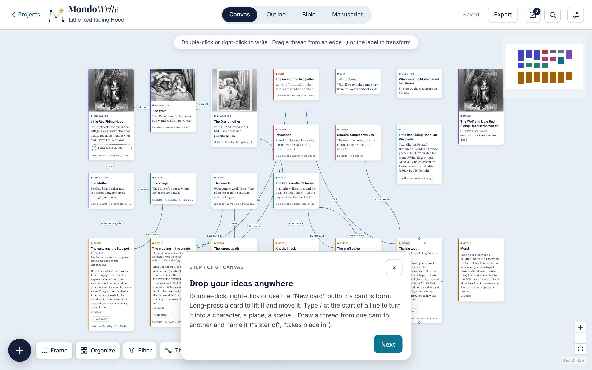
Import a manuscript or a screenplay… creates a project from an existing file:
.docx), Markdown (.md) or text (.txt): a novel project. Chapters are recognised (Word headings, “Chapter 3”, bare numbers, page breaks), separators such as * * * split scenes, and a title and “by So-and-so” at the top become the project title. A prologue or epilogue of a single scene becomes a book page..fountain) or Final Draft (.fdx): a screenplay project, with its Scene, Character and Location cards. A text file with at least two scene headings (INT., EXT.) is also read as a screenplay..pdf): a screenplay if it holds scene headings, otherwise a novel. For a screenplay, each element is recognised by its indent (scene heading, action, character, parenthetical, dialogue, transition); page numbers, and the (MORE) and (CONT’D) added by the original software, are removed, and a speech split by a page break is joined again. For a novel, paragraphs are found by their first-line indents, headings by their larger size, and running heads, page numbers and drop caps are set aside. A scanned PDF (images, no text) cannot be imported. Read the result through: a PDF keeps the layout, not the original structure.An import always goes into an empty folder: it never replaces an existing project.
Once a project is open, the top bar gathers everything you use everywhere:
You never need to save: the app does it on its own, less than a second after your last change. The disk button forces an immediate save.
When space runs short (an iPad in landscape), the bar stays on a single line to leave the height for your work: Projects and Export become icons, and the save status moves into the disk button (a dot while it isn’t saved). The views only move under the logo if that isn’t enough, in portrait for instance. A screenplay’s running time and pages are in the Screenplay view.
There is no right order: take MondoWrite by the end that suits you. Here are seven paths, from the most planned to the freest. Pick yours, and leave the rest aside until you need it.
For each path, the table shows the views that matter right away (●) and those that will help later (○).
| Path | Canvas | Bible | Outline | Manuscript or Screenplay | Notebook (iPhone) |
|---|---|---|---|---|---|
| The architect | ● | ● | ● | ○ | |
| The gardener | ○ | ○ | ○ | ● | |
| The project in development | ○ | ● | |||
| The series writer | ● | ● | ○ | ● | |
| The rewrite | ○ | ○ | ● | ● | |
| The research-heavy novel | ● | ● | ○ | ○ | |
| The writer on the move | ○ | ○ | ● | ● |
For those who want to know the ending before the first line.
At first: the Notebook, exporting the Bible.
For those who discover their story by writing it.
The sheets to fill in and the character assistant: they will help with the rewrite.
For those who must convince before writing: a publisher, a producer, a funding committee.
The Outline and the Manuscript, until the contract is signed.
For those who already have a manuscript or a screenplay written elsewhere.
For a historical novel, an investigation, a world to invent.
The canvas is a large board with no edges. You drop cards on it, connect them with threads, gather them in frames. It is the place of fertile chaos.
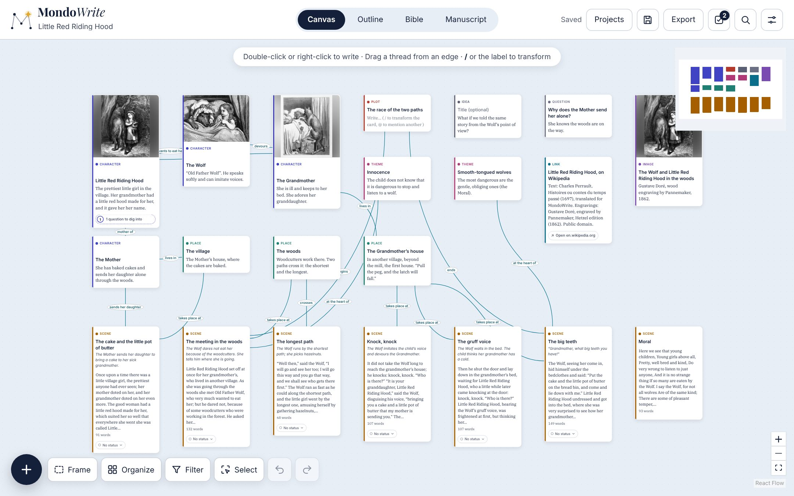
To move around, drag the background, or slide two fingers on a trackpad (a mouse wheel works too, with Shift to go sideways). To zoom, pinch the trackpad or the screen, or hold Ctrl while turning the wheel: zooming also works over a card, even with both fingers on it. A card whose text scrolls keeps the gesture as long as there is text left to scroll. With a mouse, you can get wheel zoom back: in Settings, under Wheel and trackpad (canvas), choose The wheel zooms (as before). The +, − and frame buttons at the bottom right zoom and show the whole board. The minimap at the top right shows where you are; each card type has its colour there.
There are four ways to create a card, for mouse, finger and keyboard:
The card is born where you clicked, never on top of another one. The cursor is in its title; Enter moves to the card’s text.
The arrow to the right of New card opens the list of all types: an empty card, a character, a place, a scene, a plot, a group, an object, an event, a rule, a secret, a theme, a question, an image (free photo or image from your device), a link or a PDF document.
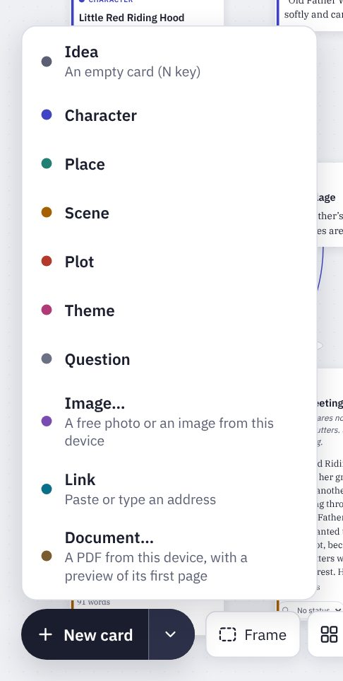
| Type | What it stands for |
|---|---|
| Idea | The starting type: a loose note, which will become something else or stay an idea. |
| Character | A person in the story, with their character sheet, motor and arc in the Bible. |
| Place (Location in a screenplay) | A setting, with its period, atmosphere, what happens there. |
| Scene | A scene of the story. Its text is the Manuscript’s or the Screenplay’s. |
| Plot | A storyline (main, secondary, romantic…) with its dramatic question. |
| Episode (screenplay) | An episode of a series: its number, its synopsis, its pivot character. Threads to plots and characters say who and what runs through it. |
| Group | A family, a clan, a company, a crew: what it wants, how it works, its means. Its members are the characters linked to it by a thread. |
| Object | A thing that matters in the story: where it comes from, what it does, what it stands for, where it is. |
| Event | Something that happened, often before the story: when, what it changed, what people say about it. |
| Rule | A rule of the world (a magic, a law, a custom): what it applies to, its exceptions, what it costs, what happens to whoever breaks it. |
| Secret | What some people hide: the truth, the stakes, the clues planted, when and how it comes out. Those who know are the characters linked to it by a thread. |
| Theme | An idea that runs through the story. |
| Question | Something to dig into later. Questions are gathered in “To dig into”. |
| Image, Link, Document | Your sources: an image, a web page, a PDF, with author and date. |
Type / at the start of a line of the card’s text (or in an empty title): the Turn into… menu opens. Choose with the arrows and Enter, or with the mouse. With a finger or the mouse, you can also tap the type label at the top left of the card. Changing the type loses nothing: the text and the threads stay.
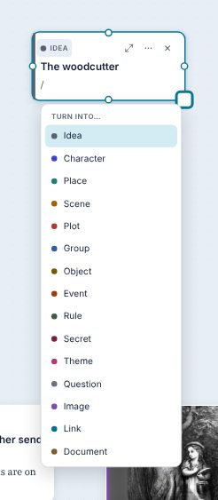
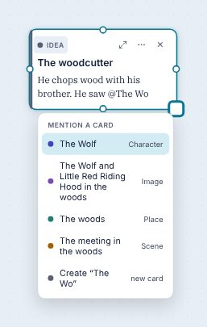
A card’s text is formatted like a light word processor. Select a passage: a small bar offers bold, italic, strikethrough, heading, list, checkbox, quote and To revisit (a highlight for passages to rework). You can also write Markdown, which turns into formatting as you type: **bold**, *italic*, # Heading, - list, [ ] for a checkbox. Pasted Markdown text is formatted the same way.
A card whose text is taller than a certain height folds, with More details to unfold it; it stays open while you write.
Type @ (or [[, as in Obsidian) followed by the start of a name: the list of the project’s cards appears. Pick one: its name is inserted as a mention, and a thread is drawn on its own between the two cards. If the card doesn’t exist yet, Create “…” creates it on the spot. It also works in the text of a Bible entry and in an enlarged card.
A mention follows its card: if you rename the card, the name changes wherever it is mentioned; if you delete it, the mention becomes plain text again.
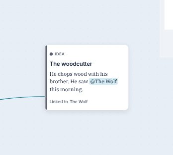
Hover over a card: a small dot appears in the middle of each edge. Drag from one of them to another card (anywhere on the card): a thread connects them. Click the thread to give it a label, the kind of link: “mother of”, “takes place in”, “suspects”… These labels show up again in the Bible (Linked to) and on the relationship map. To remove a thread, click it, then Unlink.
A thread has its own sheet too. In the Bible, touch a card under Linked to: three boxes open below the list, Their history, What is at stake between them and How it changes. A dot marks the threads that have a sheet. What is at stake between two characters follows their relationship in the pitch document.
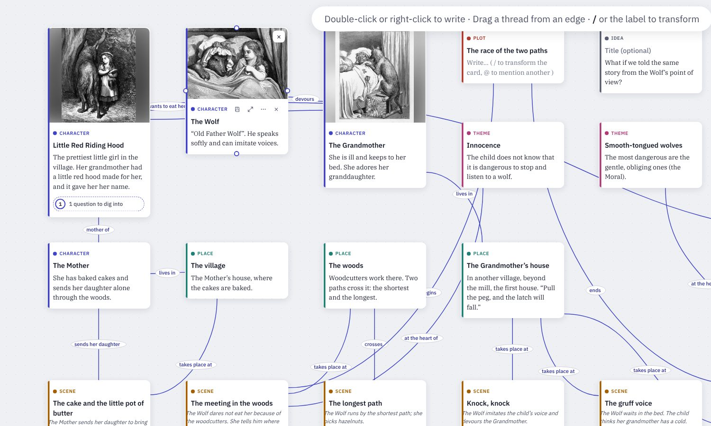
At the foot of each linked card, a discreet line says what it is linked to: Linked to The Wolf, The Grandmother… Touch that line to unfold it, then a name: the canvas centers on that card and spotlights it.
When threads cross too much, the Threads button (at the bottom, next to Filter) hides them all. Nothing is deleted, and the choice is kept with the project. Cards then spell out what they are linked to; touch Linked to on a card to show only its threads, touch it again to hide them. Threads again brings them all back.
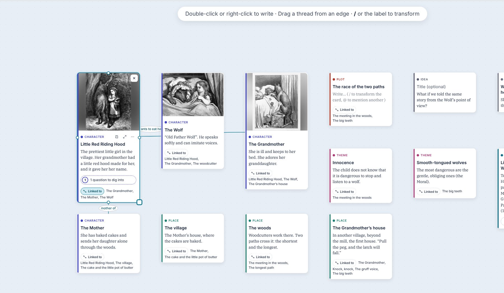
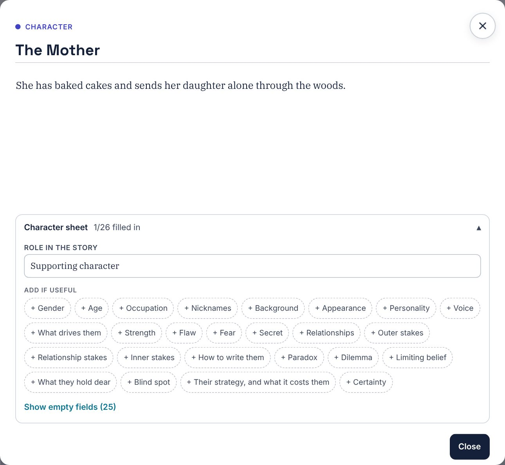
The ⋯ button (or a right-click outside the card’s text) offers:
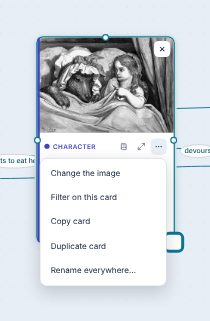
The sheet button (the small page) of a typed card opens its entry in the Bible.
The canvas also keeps your sources at hand:
.md or .txt file becomes a card (an Obsidian note keeps its title and type).Pasted onto a card (click its edge, then Ctrl V), the text goes into that card, at the end: into its notes, or into the scene’s text for a Scene card. No card is created.
Select one or more cards, then Ctrl C and Ctrl V: the copies arrive where the pointer is, with their sheet, their images, the scenes’ text and the threads between them. Ctrl D, or Duplicate card in the ⋯ menu, puts a copy right next to it. In another app, pasting gives the cards’ title and text.
A card that changes type loses nothing: a Scene turned into an Idea keeps its synopsis and its text in its notes, and a long text in a card that becomes a Scene becomes the scene’s text (a short line becomes its synopsis).
Image… opens the Free photos window: search for a word (“lighthouse, storm, forest at night…”) and pick a photo. Three sources: Openverse, with no key, which gathers openly licensed images (Flickr, Wikimedia, museums); Pixabay and Unsplash, which need a free key, kept on your device. The photo’s author, page and licence are noted in the card’s sheet. Choose an image on this device… takes a file from your computer.
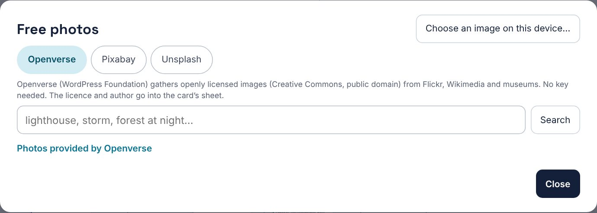
A frame gathers cards without imposing anything on them: “The family”, “Act I”, “Research”. Select cards and press C (or the Frame button): the frame surrounds them. Name it in its header. Moving the frame (by its header, or with a long press on an empty spot inside it, with a finger or the mouse) moves the cards inside; drag its edges to resize it. Deleting a frame doesn’t delete its cards.
With no cards selected, C puts an empty frame in a free space near the center of the view. A new card never lands across a frame: created in a frame (double-click, right-click), it stays there, next to its cards; created elsewhere, it goes into an empty space.
The padlock in the header locks the frame: neither it nor its cards move any more, even with Organize. The cards stay editable, connectable and deletable.
Frames have a hierarchy: a frame placed inside another has a smaller title and a dotted outline. A frame inside a top-level frame (a chapter in a beat, a beat in an “Act I” frame you drew) drops one level, with nothing to set. The beats of a structure template get the largest title, a coloured outline and their rank next to the name (“Beat 3 of 15”). When you zoom out, titles grow and move above the cards: from afar, the canvas reads like a table of contents.
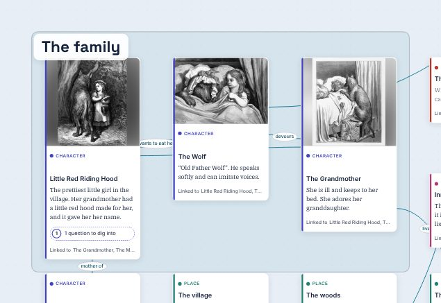
With a mouse: Shift + drag draws around cards; Ctrl + click adds a card to the selection; Ctrl A selects everything, Esc deselects. With a finger: the Select button makes dragging draw around cards instead of moving the view. A bar at the top then offers Frame, Trash and Deselect; the chosen cards move together.
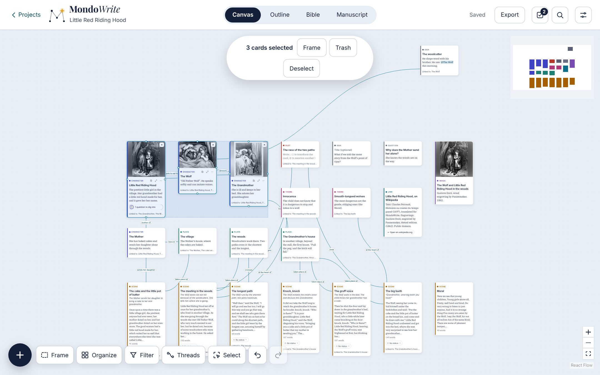
When everything overflows, Organize puts every card in a frame: characters, places, plots, themes, questions, images, links, loose ideas, and scenes by template beat and by chapter, linked in story order by “then” threads. The whole forms a compact block, shaped like the screen: the more cards there are, the longer the rows of scenes, and the frames line up on that width instead of stretching into a long strip. A chapter spread over several beats carries its title in the first one and “(continued)” in the others. Locked frames stay in place. A single undo (Ctrl Z) puts everything back.
Every beat of the template gets its frame, even an empty one (“Nothing here yet”): the gaps in the structure show at a glance. Drop a scene in a beat’s frame to put it in that beat, at the spot where you let go (hold the card by its header); the Outline, the sequencer and the Manuscript follow at once. In a screenplay, the beats are those of the template chosen in the sequencer.
After that, the canvas follows the story on its own: moving a scene or a chapter in the Outline, the Manuscript or the Screenplay’s scene list moves it on the canvas too, without going back to Organize. An organized canvas is organized again; otherwise the scenes just swap places and nothing else moves.
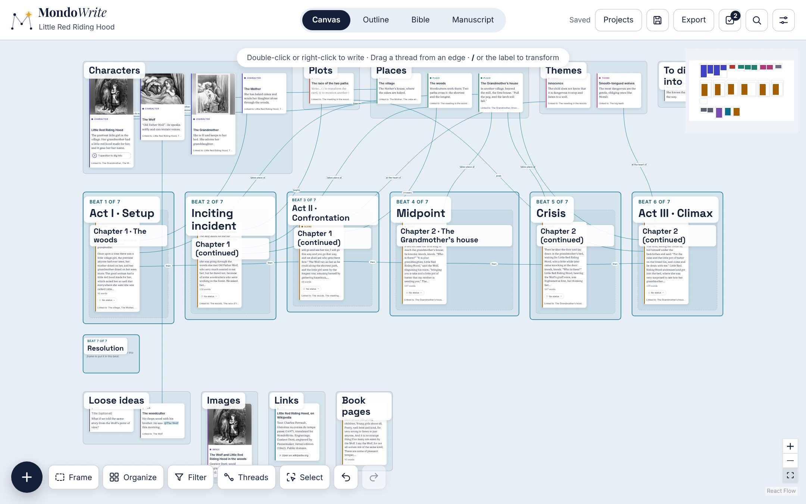
Filter hides card types (nothing is deleted): untick the types you no longer want to see. A “Filter on” banner reminds you at the top (on a phone, the button’s funnel turns solid instead); Show all brings everything back, and Hide all unticks every type at once (handy to keep just one or two).
The magnifier (Ctrl F) searches card titles and text, ignoring case and accents, and also the text of scenes (“in the text”). Pick a result: the canvas centers on the card and moves in closer (100%, never further away), and puts it in the spotlight (the others fade; Esc or a click on the background brings everything back), or the scene opens in the Manuscript.
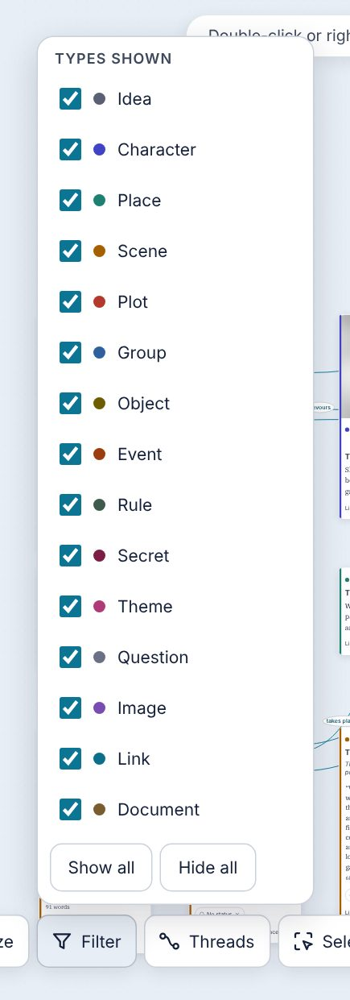
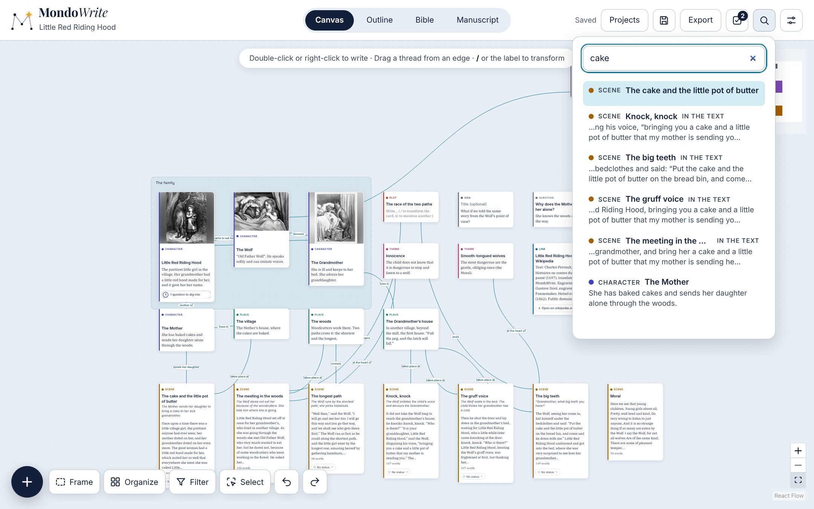
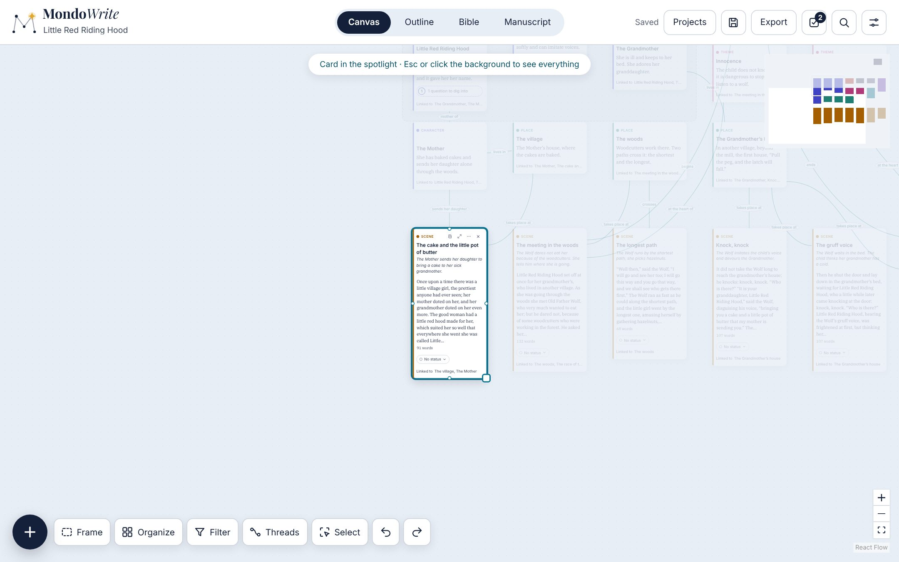
Undo and Redo (at the bottom, or Ctrl Z and Ctrl Shift Z) undo and redo changes to the canvas, the outline and the trash. Inside a text, these shortcuts undo typing.
Deleting a card (the card’s ×, or Delete) moves it to the trash, with its place and threads. A message immediately offers Undo. The trash opens from Settings (Trash (n)): Restore puts the card back, Delete erases it for good. A scene’s text is never lost with its card.
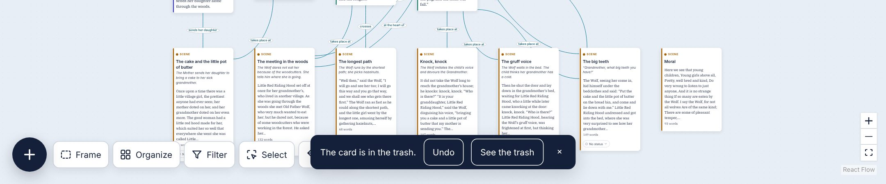
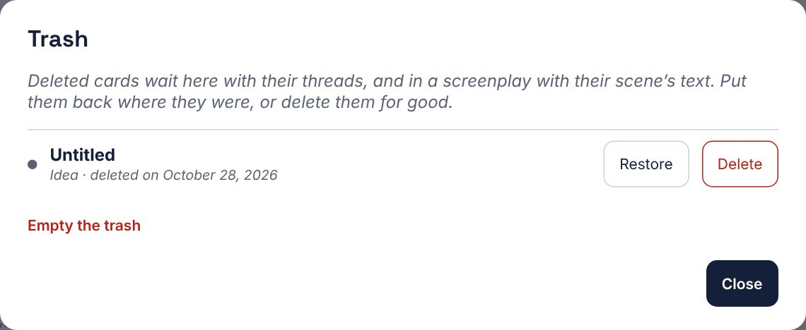
The To do button (Ctrl Shift L) gathers everything that is waiting: unticked boxes in your cards, passages marked To revisit in the manuscript, and the questions To dig into (questions kept in a character’s entry and Question cards). A task stays where you put it: ticking it in the panel ticks it in its card.
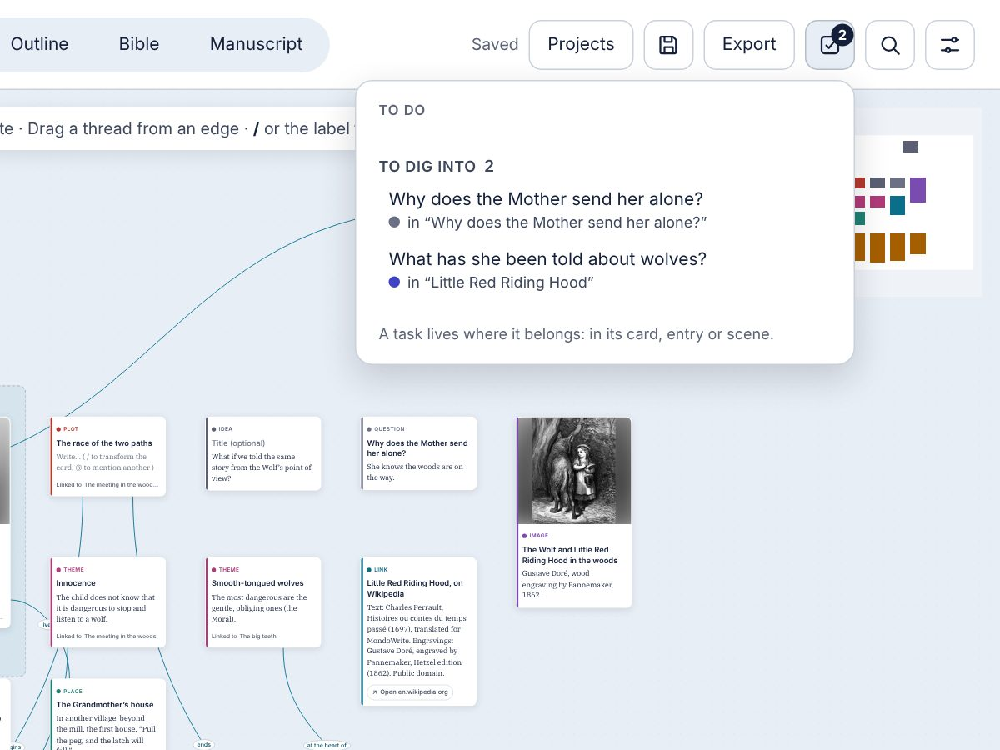
The Bible gathers the entries of your world. It builds itself: each typed card on the canvas has its entry there, sorted by type. Nothing is copied: editing an entry edits the card.
On the left, the contents arrange the sections in five numbered parts, in the order of a pitch pack: 1 · Presentation (the project, the themes), 2 · Characters, 3 · World (the places), 4 · Structure (storylines and scenes) and, set apart, 5 · For you (questions to dig into, images, links, documents, loose ideas): what is just for you, never printed in a pack you send out. Each section shows its number of entries; a click takes you there. Each section’s + button creates an entry there (and so a card on the canvas). Each entry collapses with its arrow, top right, to show only its title; Collapse all and Expand all do the same for the whole section. The device remembers it from one session to the next, and an entry opened from the canvas expands by itself. Choose and order sections lets you hide sections and change their order within their part, with the arrows; this setting also applies to the Word and Markdown export of the Bible.
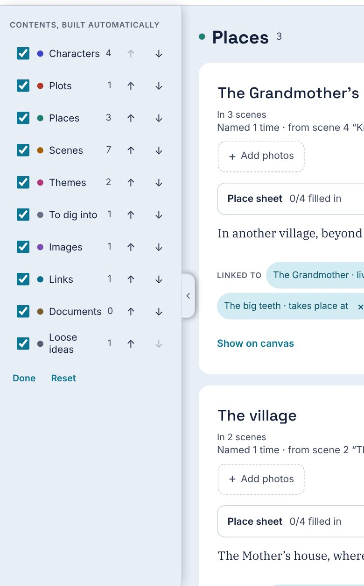
The Bible opens on the cover: your book’s identity card, useful to present it to a publisher, an agent or a producer.
Ask me, top right of the cover, asks one question at a time for each empty field (“Who wants what, what stands in the way, and what’s at stake?” for the logline). Your answer goes as it is into the field, with Add; Another one moves to the next question. Like the character assistant, it never answers for you.
In a screenplay, the cover also has a folding part, Writing the series, for everything that helps a producer believe in it and a writer join it: Why now, Why me, The promise (what viewers come back for, episode after episode), What it is not, The arena, Before the pilot (what happened before episode one), What holds them together (why your characters cannot walk away), The engine (the central conflict that makes the episodes), A typical episode, The season’s question, Where the season ends, Future seasons, Do, Don’t, Where it could go next and Other platforms (podcast, graphic novel, game: only printed in a document you send). Two more chips under the title: Shape (episodic, serialized, hybrid) and Pilot (premise pilot or template pilot).
Episodes are Episode cards, kept in the Structure part of the Bible, in the order of their number. New episode, on the cover, creates one. Each has a synopsis of three or four sentences, a Pivot character, chosen among your characters, a Season (1 if nothing is written; from two seasons on, numbers read “2.3”) and an optional Marker, Midseason or Season finale; draw a thread from the episode to the plots that run through it and the characters who appear in it. A project that wrote its episodes on the cover, one per line, finds them as cards when it opens.
Under the note of intent, a discreet marker gives its length: a page is about 450 words.
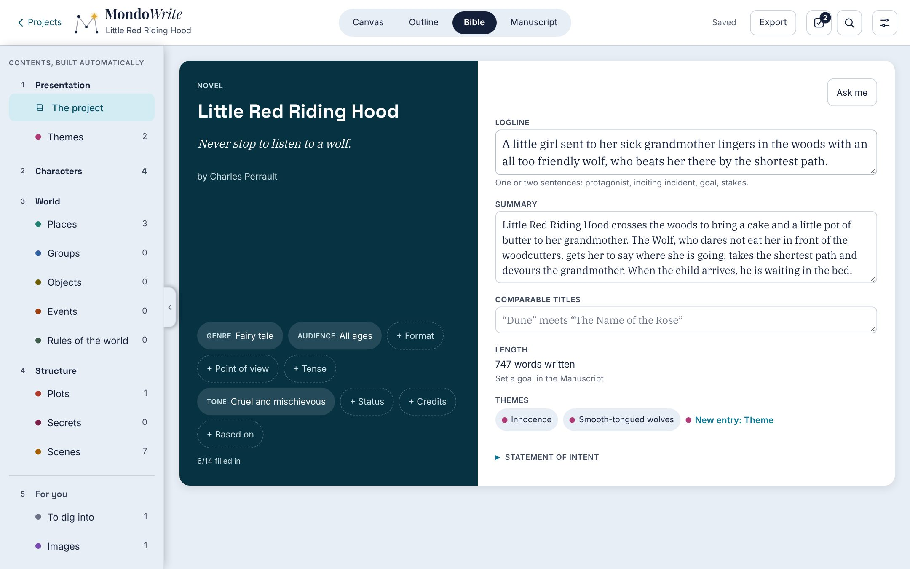
Each character has an entry that gets to the point:
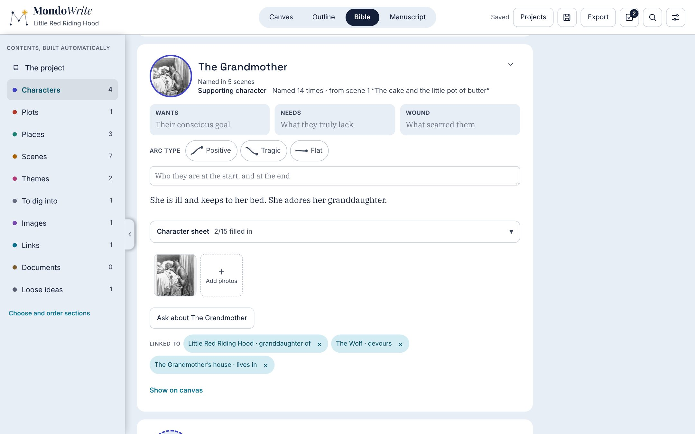
Ask about … opens the assistant, which helps you dig into a character by asking questions, one at a time. It never answers for you.
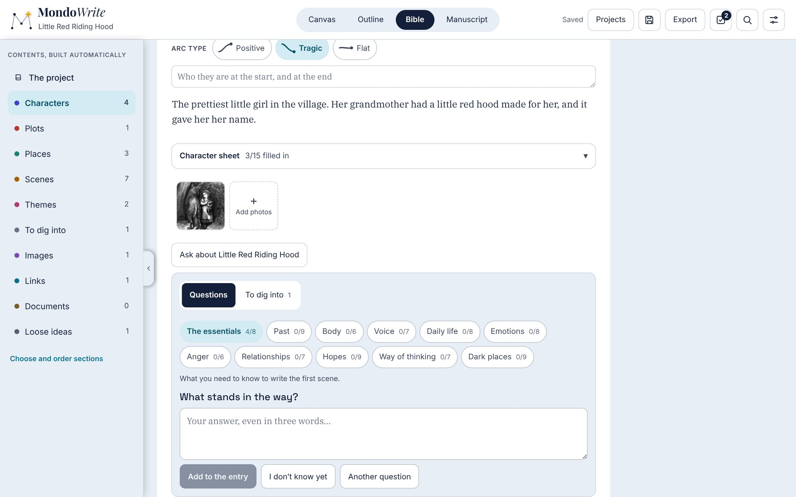
In the Characters section, the Relationships tab draws the characters and the threads that connect them on the canvas, with their labels, then the list of relationships. Draw a thread between two characters and name it (“sister of”, “betrays”): it shows up here. Tap a portrait to open their entry.
A thread gets thicker with the number of scenes the two characters share, and the list spells it out (“3 scenes together”). A dotted thread joins two characters who never share a scene: a relationship the story doesn’t show yet.
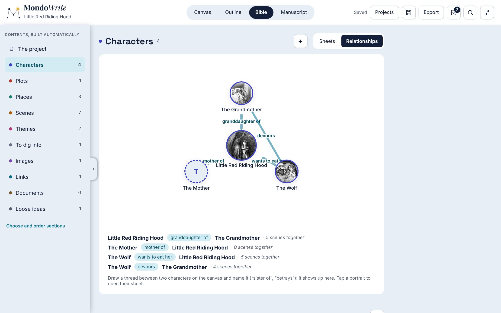
Under each character’s name, a discreet line gives their scenes (and, in a screenplay, their lines and share of speaking time); under each place’s name, its scenes (and for a location, its pages, interior or exterior, day or night). Everything is read from your text. The details, sorting and CSV export are in the Statistics window, opened from the Manuscript or the Screenplay (see “Project statistics”).
Each type has its sheet, folded under the text:
Every sheet except a scene’s has a Certainty box: Settled, Tentative or To explore. It tells you what you can build on; it never appears in a document you send.
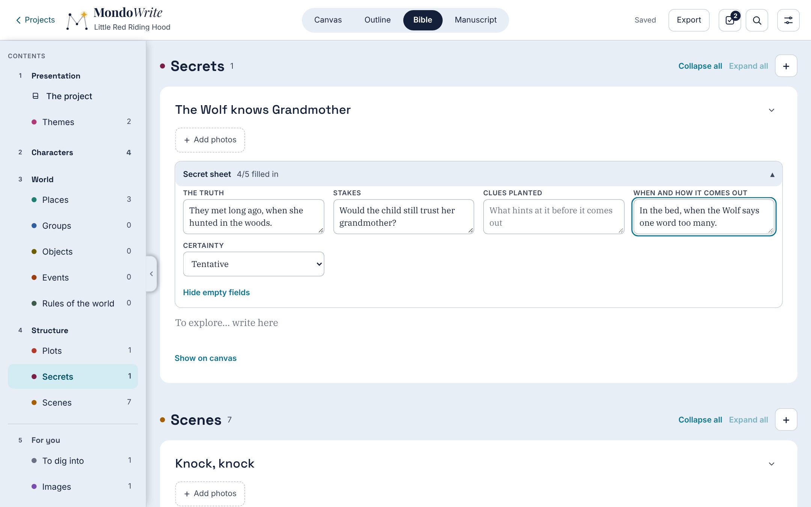
Questions To dig into and loose ideas have their own sections too. Show on canvas, at the bottom of each entry, shows its card in the spotlight: the others fade until you click the background or press Esc.
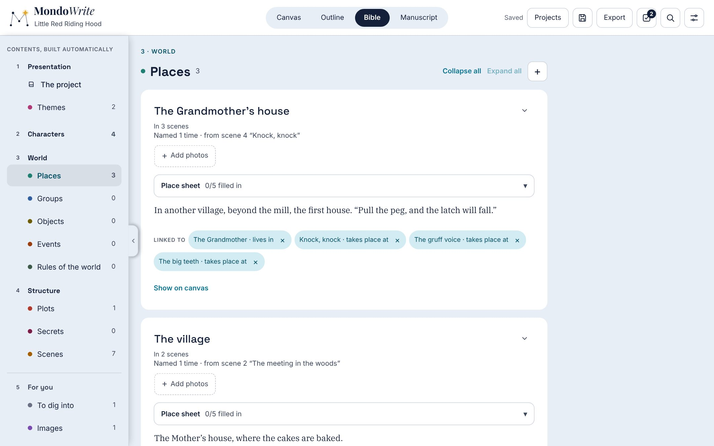
The Outline shapes the story: the order of scenes, their place in a structure, their chapters. It contains only scenes: those of the canvas, the Bible or the Manuscript, always the same ones.
The Template menu offers a structure, with a sentence that explains it:
Each beat has a name, a hint, and a usual place in the story, shown by the story ribbon (see the Manuscript). Changing templates loses no arrangement: each template keeps its own. Each beat opens with its rank (“Beat 3 of 15”), a large title and its number of scenes; chapters come below, smaller, as on the canvas.
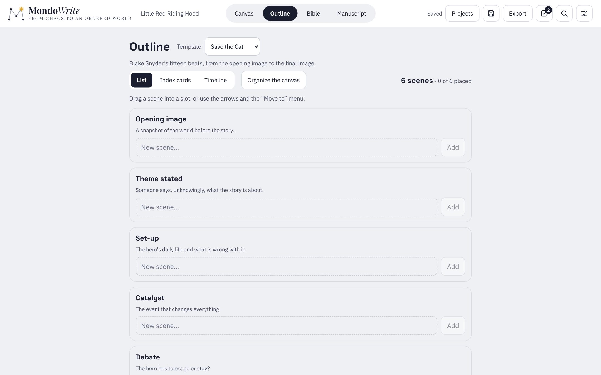
Dan Harmon’s story circle is also drawn as a circle: the known world at the top, the unknown below, and the number of scenes in each step. An empty step is dashed; touch a step to go to its beat.
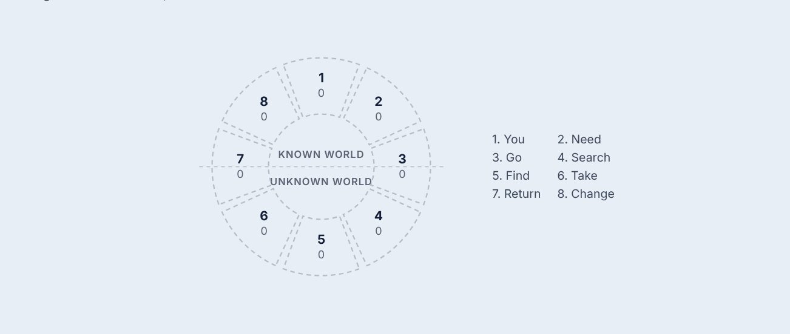
In the Template menu, Create a template… opens the list of beats, filled in with those of the current template: rename them, write what goes in them, change their order, remove some, add others. Scenes follow their beat, even renamed. Keep in my templates then offers it in all your projects, novel or screenplay; Edit the beats… brings it back later. A removed beat sends its scenes to “To place” (in a screenplay, into the beat before it).
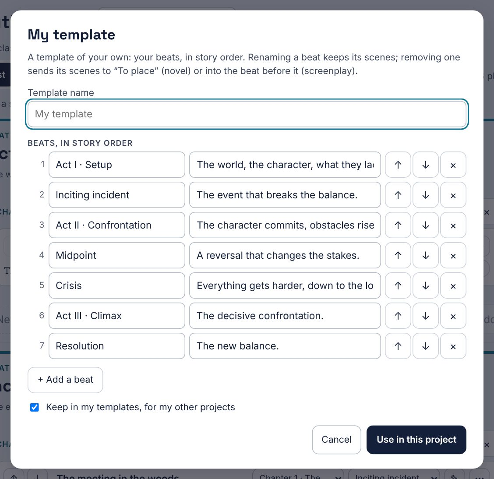
In the List layout, each scene shows its title, synopsis, status and chapter. To move it:
Scenes not yet placed wait in To place, in canvas order. New scene… at the bottom of each beat creates a scene right there (and its card on the canvas). The arrow button (↗) shows the card on the canvas, the pencil (✎) opens the scene in the Manuscript, the trash button deletes it.
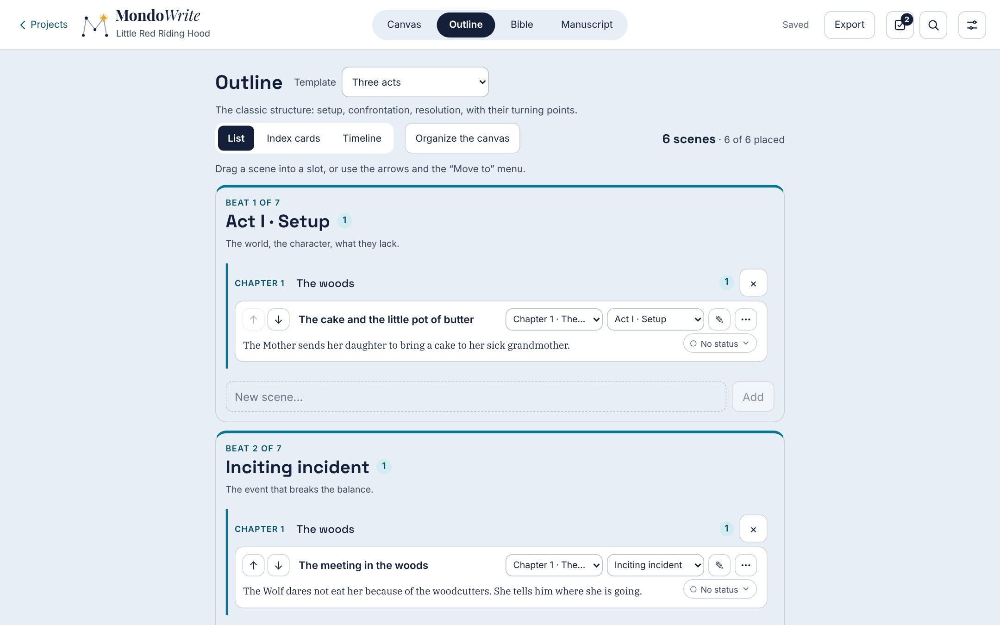
Chapters divide the story. A scene’s Chapter menu offers New chapter from here; each chapter may have a title (optional). Chapters are numbered automatically, from their place. Deleting a chapter gives its scenes back to the previous chapter: no scene is deleted. In the Manuscript, you can also start a chapter from the keyboard (see below).
Three layouts of the same outline:
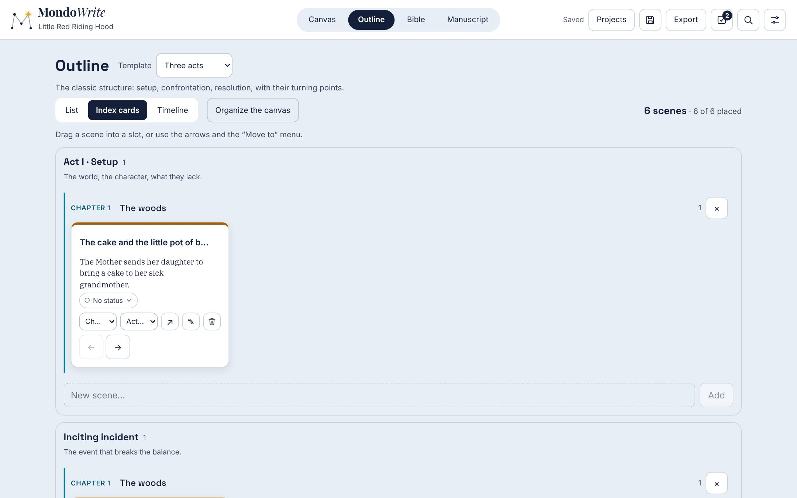
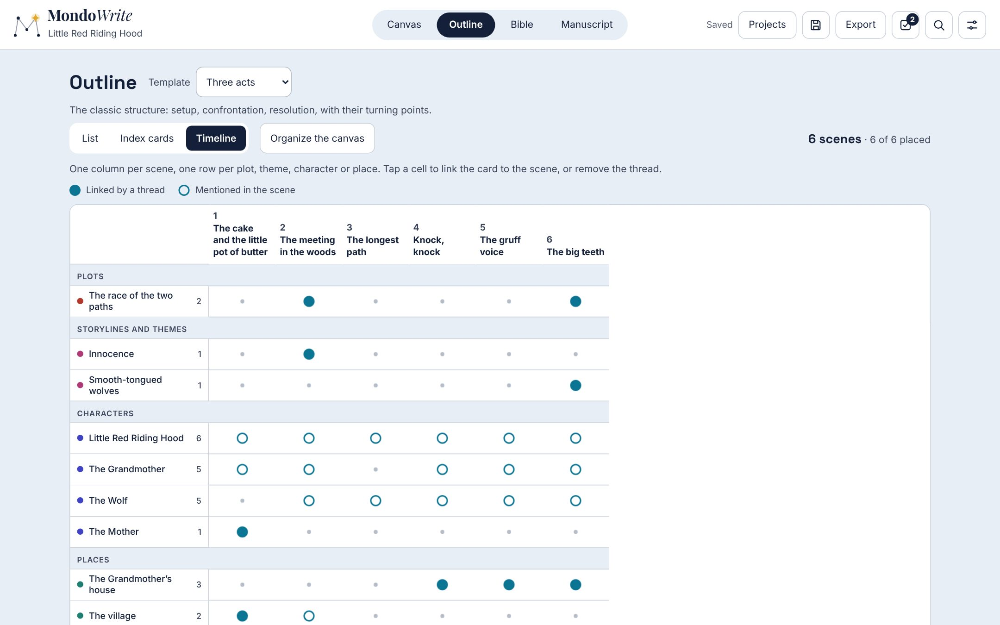
Organize the canvas also arranges the canvas from the outline: one template beat, then one chapter, per frame.
The Manuscript is where you write, one scene at a time, in outline order, on a page laid out like a book’s.
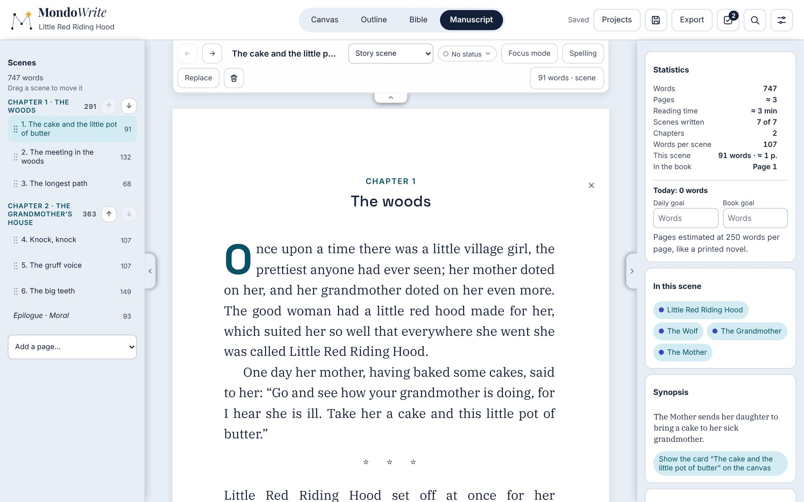
Once a template is chosen, a thin band at the top of the bar (and under the Screenplay’s bar) shows the structure of your text as it is: each beat takes the room its scenes really take, in words (pages in a screenplay). A thin mark shows where each beat usually begins in that structure: the gap shows without anything being imposed. Touch a scene on the ribbon to go there; the line below says which beat you are in and where in the story. While little is written, each scene counts as an equal share.
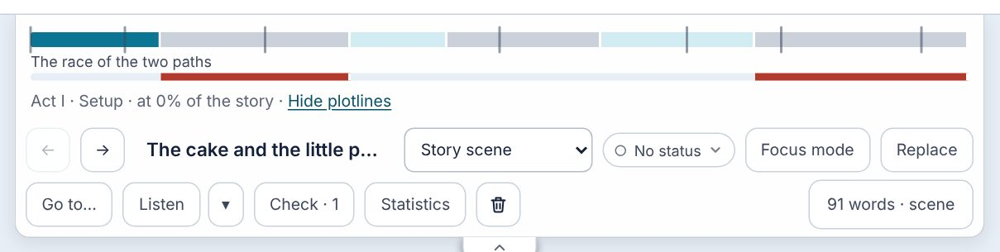
On the left, all the book’s scenes, by chapter, with their word count. A click opens a scene. To move one, drag it (onto the top half of another scene to put it before, the bottom half to put it after), or use its arrows or Alt ↑ ↓. It takes the chapter and beat of its new neighbour. A whole chapter moves too, by dragging its title or with its arrows.
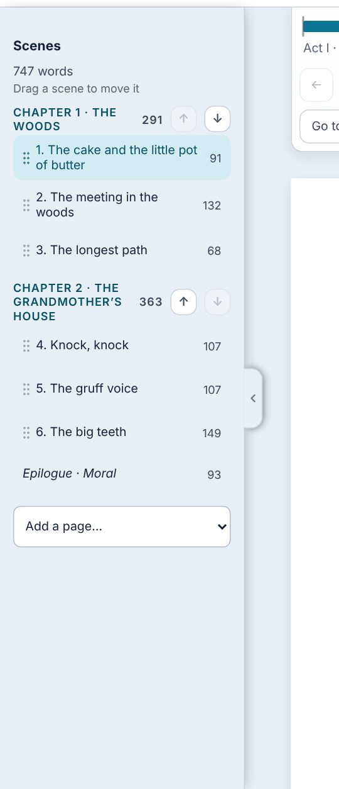
Above the page, a discreet bar: the scene arrows, the scene title, its page type, its status, and the Graveyard, Focus mode, Replace and trash buttons. The chapter number and title sit in the top margin; the first letter of a chapter becomes a drop cap when you are not writing in that paragraph. The scene’s synopsis shows as a watermark in a scene that is still empty, like an outline note.
Page zoom. Ctrl + and Ctrl − enlarge or shrink the whole page, without changing its layout or page breaks; Ctrl 0 returns to normal size. The setting is also in Settings (Page zoom) and, on Mac, in the View menu. It also applies to the Screenplay sheet. Enlarged beyond the window, the page scrolls sideways.
You can divide the story without leaving the keyboard:
An Undo message shows for ten seconds after each split.
A published book also has pages outside the story. The Add a page… menu, below the scenes column, creates them: Title page, Copyright, Dedication, Epigraph, Prologue, Epilogue, Acknowledgments, About the author. They place themselves at the start or end of the book and are each laid out in their own way (a centred italic dedication, a copyright page in small print…). The page type menu, in the bar, turns a scene into a book page and back.
Each scene has a status: Draft, To revise or Done. You choose it wherever you see the scene (the Manuscript bar, the card, the Bible, the Outline), and a coloured dot recalls it in lists. The statistics count finished scenes.
The right column shows the book’s statistics: words, pages (estimated at 250 words a page, like a printed novel), reading time, scenes written, chapters, words per scene, and for the current scene its word count and place in the book. Set a Daily goal and a Book goal in words: today’s progress, the number of days in a row and the book’s progress are shown.
Below, In this scene lists the characters and places mentioned in the text (a click shows their card), then the scene’s Synopsis, editable in place.
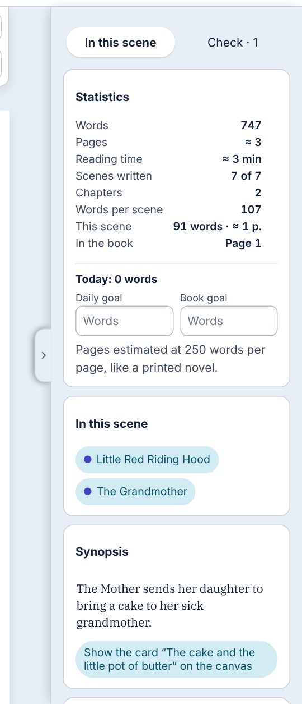
To create a character or a place without leaving your sentence, type / followed by the name, anywhere in the text (after a space, a parenthesis or a quote): “/Lighthouse of Pious Wishes” accepts names of several words. The menu offers Character or Place; the card is created in the background, the name stays ordinary text (no link is left in the manuscript) and you keep typing. You fill in the card later in the Bible.
Another way: select a name you have already written and type /, or tap the Character or Place button in the small bar that appears on the selection.
A passage you are unsure about does not have to be deleted. Select it and press Ctrl Shift K (or, on a touch screen, tap the Graveyard button in the selection bar): it leaves the text and joins the Graveyard in the right column, with the scene it came from. Put back returns it exactly where it was; if the text has changed since, it goes to the closest spot, and to the end of the current scene if the original scene no longer exists. The Graveyard is kept in the project. A passage must lie within a single scene.
The scenes column and the right column fold away: a handle on the edge of the page opens and closes them, and MondoWrite remembers your choice. On a narrow screen (iPad upright, iPhone) they become drawers over the page, closed by default on a phone.
The system spell checker is set in Settings, Spell checker: Except manuscript and screenplay (the default: your scenes’ text is not underlined while you write), Everywhere or Nowhere. On Mac, iPad and iPhone, the system underlines words as you type them or come back to them: text already written is not always checked in full as soon as it opens. Unchecking Keyboard suggestions and autocorrect stops the iPad, iPhone or Mac keyboard from suggesting words and correcting your text for you.
Focus mode (Ctrl Shift F) keeps only the page on screen. At the top, two settings: Typewriter keeps the current line in the middle of the screen, and Highlight fades everything except the current sentence, line or paragraph. Esc leaves it. The Screenplay has the same focus mode, with the same settings.
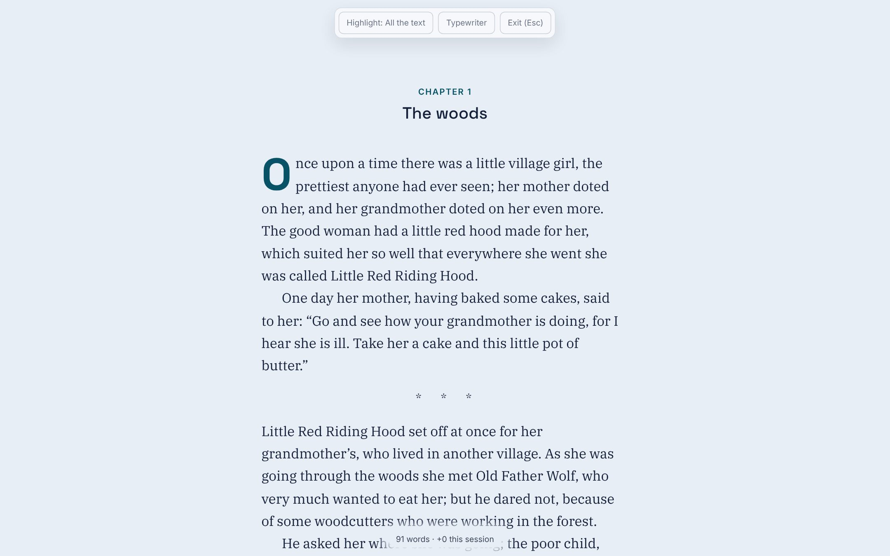
As you write, MondoWrite sets the right typography: curly quotes “ ”, apostrophe ’, ellipsis …, dash from two hyphens, and in French « » with their non-breaking spaces. The Typography as you type setting chooses: follow the language, French, English or none.
Replace (Ctrl Shift H) searches the whole text or the current scene, with or without the cards. Match case and Whole word refine the search; the number of matches shows as you type. The replaced word keeps its capitals. Undo puts everything back. @ mentions are never touched: they already follow their card. Each match is listed with the sentence around it: uncheck the ones to leave as they are.
Rename everywhere… (a card’s ⋯ menu) only replaces the name as you wrote it, or in capitals: a character called Rose never changes “the sun rose”. If the name is also an ordinary word in your text (Will, Hope, Grace…), MondoWrite says so and unchecks the matches at the start of a sentence, where the word and the name look the same: read them before renaming.
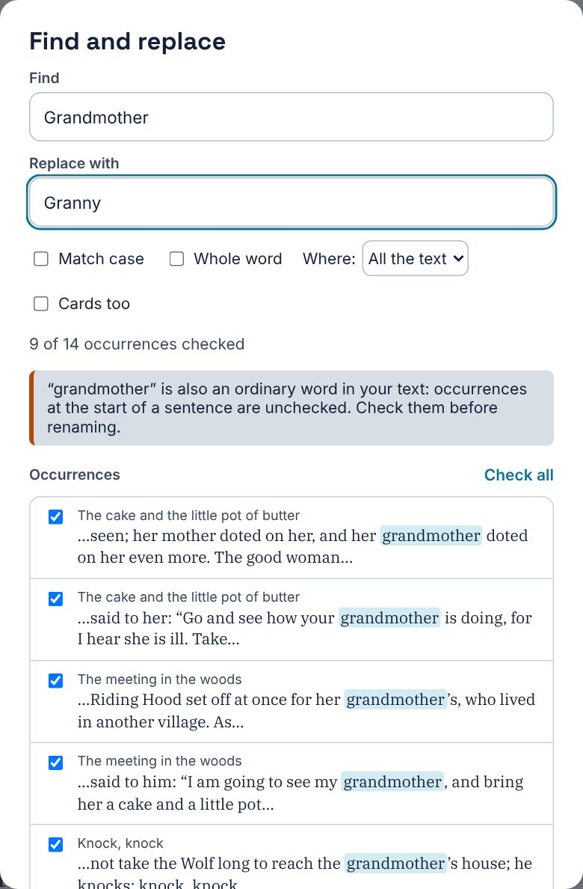
Go to… (Ctrl G, in the Manuscript and Screenplay bars, and from any view) opens a small window: type a number to go to that page, or to the scene with that number in a screenplay (the chapter with that number in a novel), or a word from the title of a scene, a chapter or a synopsis. The manuscript’s “to revisit” passages and the screenplay’s [[…]] notes are there too. Enter takes you to the first place found; the arrows pick another one.
Listen reads the text aloud from where you are, with the voices installed on the device (nothing goes online): in a screenplay, the narrator reads scene headings, action and transitions, and each character speaks their lines in their own voice; in a novel, the narrator reads everything, to the end of the book. The passage being read is highlighted and the page follows it. Pause, Resume and Stop replace the button while reading; typing in the text stops it too.
The arrow next to Listen opens the choice of voices: the narrator’s, each character’s (otherwise a voice is picked for them, always the same one), the speed and, for a screenplay, whether to read parentheticals. These choices stay on the device, since voices differ from one device to another.
The Check button in the bar (with the number of items found) opens the tab of the same name in the right column, next to In this scene. It points out what deserves a look, without ever correcting anything: a name spelled almost like an entry’s (“Inés” for “Inès”), two spaces in a row, a space before a comma or a period. Touch an item to go to the passage, selected in the text. Rename everywhere… opens “Find and replace” with the right name; Ignore removes the item from the list until the app is closed.
It also asks questions about the story, never errors: the character marked as main is not the one seen in the most scenes (“Who do we really follow?”); a main character has not filled in their “Wants” box; a series has no episode yet; a secret has no planned reveal, or comes out with no clue planted before; an object is named in only one scene (set up without paying off, or paying off without being set up); a template beat begins more than ten points from its usual place (from six scenes on, according to the story ribbon: the question leads to its first scene). Touch the question to open the profile; It’s intended sets it aside.
The Statistics button in the bar (also in the Screenplay’s bar, and in the Mac View menu) opens a window that counts, in your text, what you can’t see while writing. Nothing is typed in or saved there.
Each tab has its Export as CSV…, for a spreadsheet.
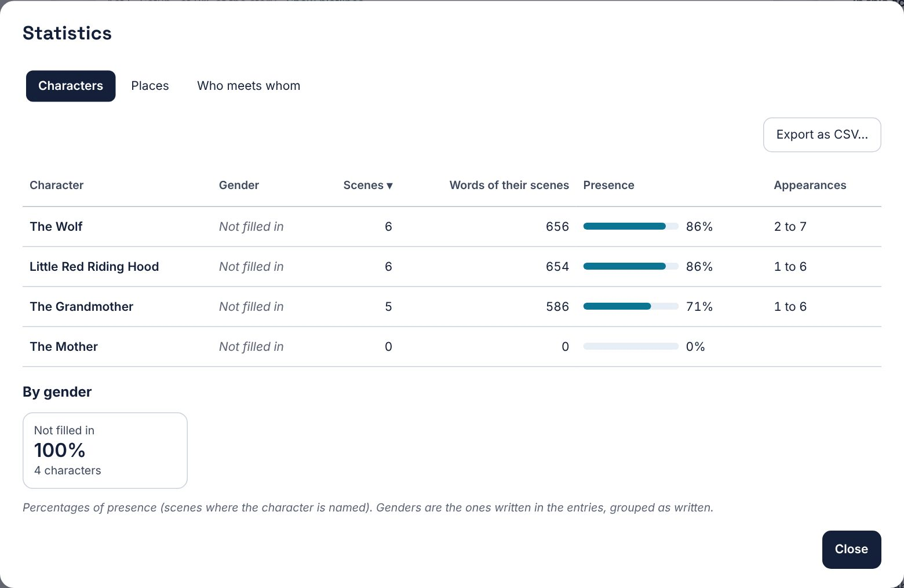
A Scene card carries its text. On the canvas, it shows its synopsis, the start of its scene and its word count. Expanded, it becomes a page where you write the scene, the same as in the Manuscript; Open in Manuscript takes you there.
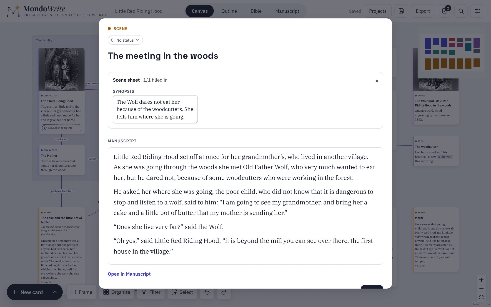
Deleting a Scene card never deletes its text. If a scene has lost its card, it appears in Texts without a card, at the bottom of the column: Recreate the card puts it back in the book.
In a screenplay project, the Manuscript becomes the Screenplay view: an editor in standard film format, which saves the text as Fountain, an open format read by Highland, Fade In, WriterSolo, Slugline or Trelby. The Outline lists the scenes in screenplay order.
Create a project with A screenplay, import a Fountain or Final Draft file, or switch an existing project in Settings › This project › Project type. The vocabulary follows: Places are called Locations, a Scene card’s title is its heading (“INT. LIGHTHOUSE - NIGHT”), and length is counted in pages and minutes (one page is about one minute), shown in the top bar.
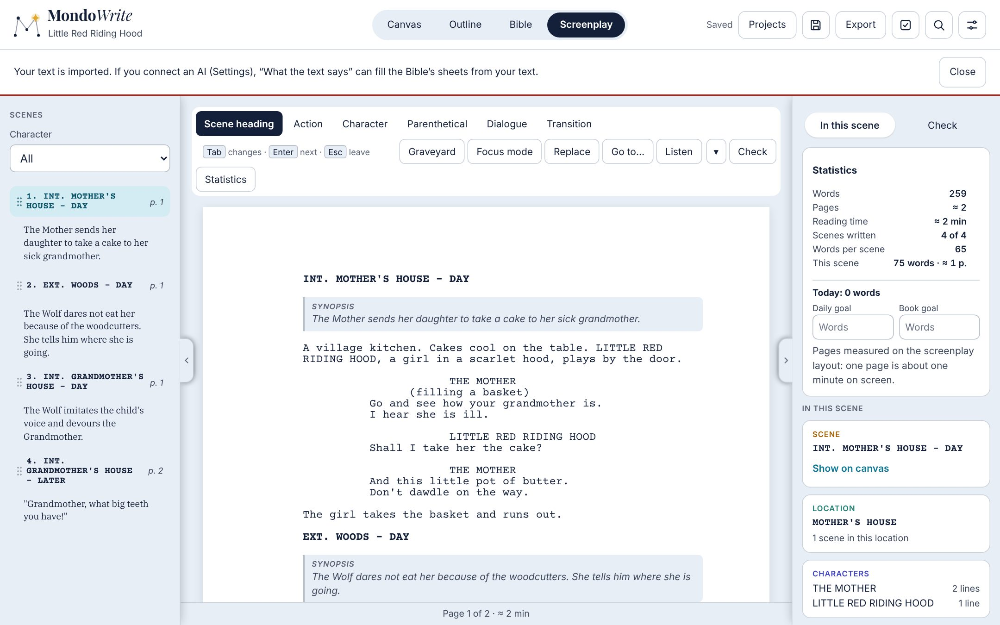
The screenplay is made of elements: Scene heading, Action, Character, Parenthetical, Dialogue, Transition. The bar above the page shows the current element and lets you change it with a click. From the keyboard:
On iPhone, the bar is folded at the top of the page: it only shows the type of the current element. Tap it to open the panel (the six elements, then Graveyard, Focus mode, Replace and Check); it closes as soon as you pick an element. The Statistics window, too wide for a phone, isn’t offered there: open it on iPad or a computer.
The app recognises what you type: a line starting with “int.” or “ext.” becomes a heading, a parenthesis under a character a parenthetical. The element you are writing switches to capitals when needed. The page is cut into real pages (Letter or A4), with the page number and length at the bottom.
While you write a heading or a character name, MondoWrite suggests the locations and characters from the Bible, times of day (DAY, NIGHT…), extensions (V.O., O.S., CONT’D). Choose with the arrows and Enter. A new name offers to create its entry or location.
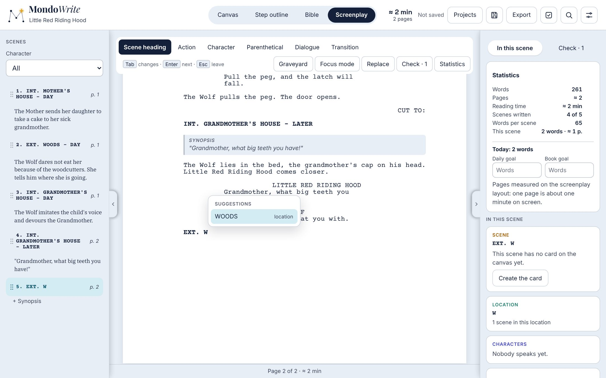
A scene or a character written in the screenplay gets its card on the canvas (with the location’s card and the “takes place in” thread), without anything being copied.
On the left, the list of scenes with their synopsis and page; a click takes you there. They reorder by dragging their grip (⋮⋮ at the left of each scene), with their arrows or Alt ↑ ↓. + Synopsis adds a synopsis to the scene (a Fountain = … line, ignored when printing). On the right, In this scene shows the scene’s card, its location (with the number of scenes set there) and the characters who speak, with their number of lines. Both columns fold away with the handles on the edges of the page, as in the Manuscript (and become drawers on a narrow screen).
At the top of the page, the title page is filled in place: title, credit (“Written by”), author, source, contact, draft date. Your profile’s name is put there for every new screenplay.
Scene numbering and heading underlining (on screen, in the PDF and in the Final Draft export), as well as the page size (US Letter or A4), are set in Settings › This project. In the bar, Graveyard, Focus mode and Replace work as in the Manuscript.
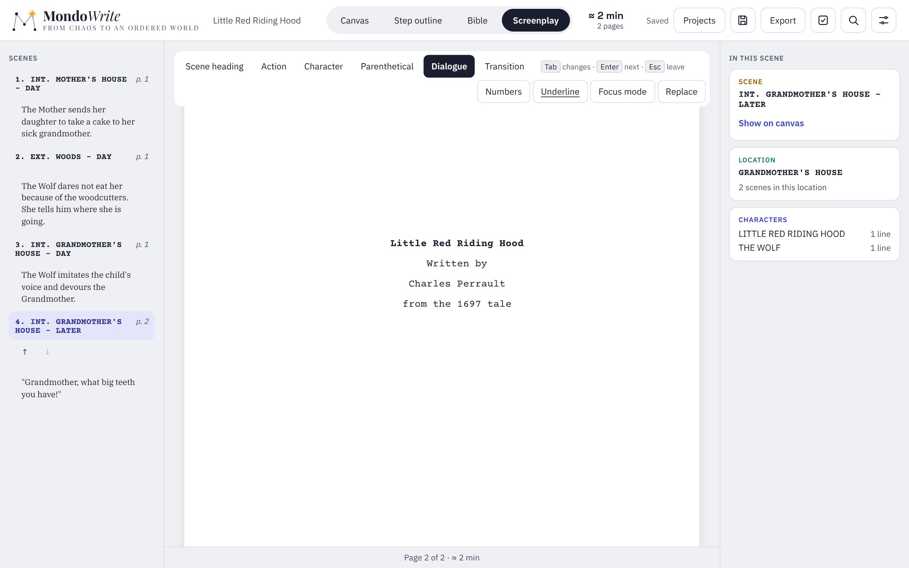
The right column starts with the screenplay’s statistics: words, pages (measured on the screenplay layout), running time, scenes written, and the daily and project goals. Words written in the screenplay count toward today’s progress and the days in a row, as in the Manuscript. Below, In this scene, then the Graveyard: select a passage and press Ctrl Shift K to set it aside, Put back brings it back.
Focus mode keeps only the text, without page breaks: Typewriter keeps the current line at the same height, and the highlight chosen in Settings (sentence, line or paragraph) fades the rest. Esc leaves it.
As in the Manuscript, Check opens a tab of things to look at: near-identical character names (“CHAPPERON” next to “CHAPERON”, with each one’s number of lines), a character who speaks without a card (Create the card; a typo on a known name is listed among the near-identical names, with Rename everywhere…), action longer than 4 lines, a heading without INT./EXT. or without a time, a character with no line, extra spaces, and the questions about the story (main character, “Wants” box, series without episodes, with New episode, secrets, objects, and the length of the pilot: about one page per minute, from the format chosen on the cover, for example 27 to 35 pages for 30-minute episodes). Touch an item to go to the element; nothing changes without you.
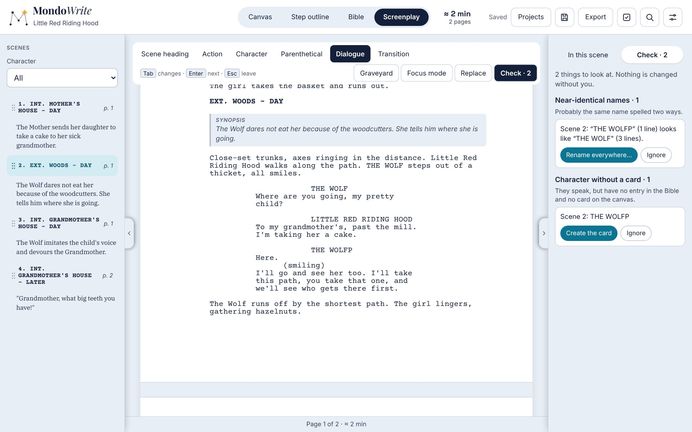
At the top of the scene list, choose a Character: Their scenes keeps only the scenes where they speak or are named in the action; Their lines also fades everything they don’t say. The faded text stays editable, and the sheet becomes continuous while the filter is on. The banner in the bar, or All, brings back the whole screenplay. From their entry in the Bible, See their lines in the screenplay sets this filter directly.
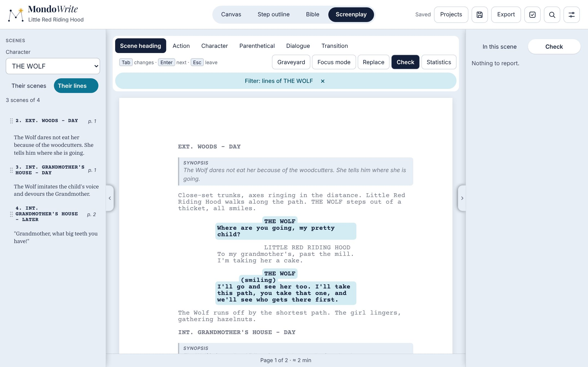
The Statistics button in the bar opens the same window as in a novel (see “Project statistics”), read from the screenplay. The Locations tab is a shooting breakdown: the pages of each location (one page is about one minute), its interior or exterior scenes, day or night, and the characters met there. You see at a glance what will be expensive (exterior nights) or a location used only once. A location written without a card gets its own row.
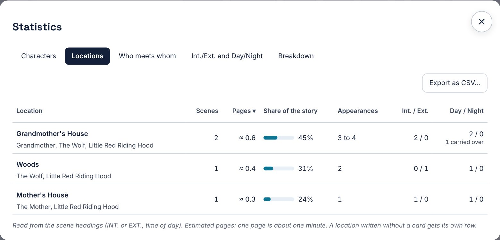
In Who meets whom, a touched cell also offers See these scenes in the screenplay: the filter then keeps only the scenes where both characters meet.
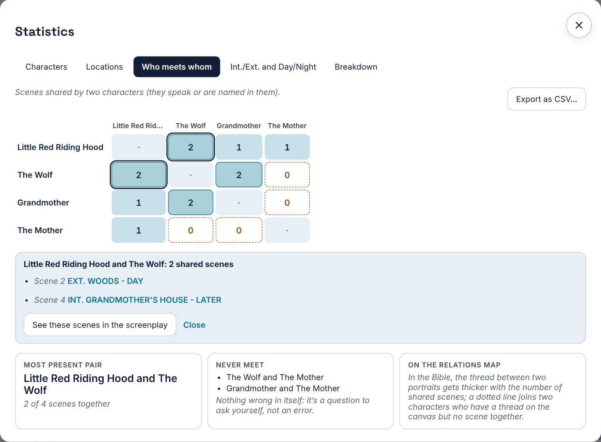
The Int./Ext. and Day/Night tab counts across the whole screenplay. A “LATER”, “CONTINUOUS” or “SAME TIME” scene, or one with no time, carries over the day or night of the previous scene: it is counted as “carried over”, without touching the text. An INT./EXT. scene counts on both sides.
The outline lists the scenes in screenplay order, with their synopsis, characters, length and status. Drag a scene or use its arrows to change the order of the screenplay itself. On each scene, ↗ shows its card on the canvas and ✎ opens it in the Screenplay.
The Template menu offers: none, three acts, Save the Cat, eight sequences (the film in eight sequences of about fifteen minutes), TV episode (teaser, four acts, tag), and the Outline’s structures (hero’s journey, Dan Harmon’s story circle, five-act pyramid, six stages, seven points, kishōtenketsu, romance, mystery), plus your own templates (see the Outline). The template’s beats are sections of the Fountain file, which other software sees as plain sections; place scenes with Move to, the arrows or by dragging. Each beat shows its rank (“Beat 3 of 15”), a large title, its hint and its length; your own sections stay smaller, under the beats.
Expanded, a screenplay Scene card shows its heading, its synopsis and an editor limited to the text of that scene, with the same element bar.
MondoWrite works entirely without AI. If you plug one in, it asks questions and makes suggestions; it never writes your text, and nothing changes without your say.
In Settings › AI (optional), choose a Service:
Test and list models checks the connection and offers the list of available models. The AI button then appears in the top bar.
The AI always names cards by their title. When something goes wrong, a message says what: service unreachable, key rejected, unknown model, limit reached.
The Export button makes your files inside the app, with no external tool. Choose the format: the file is saved wherever you decide.
Scenes of the same chapter form one chapter, separated by “* * *”. Book pages (dedication, prologue…) are in their place.
Paperback (KDP)… prepares your book for print on demand (Amazon KDP): a print-ready interior PDF, and a cover template sized to it.
The settings are kept with the project. As soon as the window opens, and at each change, the book is laid out: the window shows the page count and spine width, and warns if KDP would refuse the book (fewer than 24 pages, or too many pages for this paper).
Save the cover template (PDF) gives a page at the exact size of your full cover (back, spine, front), bleed included: the spine computed from the page count and paper, the safe areas to keep text inside, the area for the barcode KDP adds, and the measurements written on it. Use it as a guide layer in your design software, then hide it before exporting your cover. Under 79 pages, KDP doesn’t accept text on the spine.
Fill in the “Title page”, “Copyright”, “Dedication” or “Acknowledgments” pages in the Manuscript so they replace the ones MondoWrite makes. Always check KDP’s previewer before publishing.
The Export the screenplay as PDF window shows the first page as it will come out, updated with every choice:
[[…]] notes, in gray. All unchecked (except the title page), it’s the standard format, the one you send.{date}, {title} and {author} are filled in on export (“Draft 3 · {date}”), and a Watermark across the page (“Confidential”). The page number stays at the top right.These choices are kept in the project: next time, the window opens as you left it.
Bible… opens the Export the bible window. Three questions are enough, and the preview, on the right, shows the real PDF, page by page, rebuilt at every change.
For someone else, the document stays short: above the preview, the page count is followed by a marker, “Most funds and commissions expect 15 to 20 pages”, never by a block. Why this recipient adds a sentence at the end of the note of intent (“Why this network”): save one preset per recipient. Your background and your works (writer profile) make an “About the author” page at the end, preceded by “Why me” for a series. The characters’ voice and writing notes stay in the working bible.
A series bible also gets the arena and what came before the pilot, what holds the characters together, the engine, the season’s question and where it ends, the episodes (a short list: number, title, marker, synopsis, pivot character, grouped by season), the future seasons, the writing rules and, for someone else, the other platforms. Groups, objects, events and rules of the world follow the places in the World part; secrets follow the plots in the Structure. Two options, unchecked for a producer: Thread grid (which storylines in which episodes, or in which parts of the pilot if there are no episodes) and “At a glance” page (the characters’ hooks and the episodes each appears in). Attach the first pages of the pilot adds the first ten pages of the screenplay at the end, in standard format. For a publisher, Attach the first pages of the manuscript does the same with your novel, in manuscript format. The look offered by default is Plain for a producer, Editorial for a publisher.
Your choices are kept with the project. Preset saves them under a name (“For my editor”, “Writers’ room”) to find them again. The file carries today’s date (“Pitch pack - Title - 2026-10-26”): each send keeps its version. Word and Markdown keep the chosen parts and their order, not the look.
The canvas exports to a PNG image of the whole board, a standard PDF (A4, to send) or a large-format one (A1, to print and pin on the wall), or as card text (Word, Markdown), one part per frame.
A MondoWrite project is an ordinary folder, full of text files you can open, copy, back up or version as you like.
| File or folder | Contents |
|---|---|
cosmos.json | The title, type, card positions, threads, frames, outline, goals, project cover, paperback settings. |
cartes/ | One card per Markdown file, with a small header (type, title, image, sheet). |
manuscrit/ | The text of each scene of a novel, in Markdown. |
scenario.fountain | The screenplay’s text, in Fountain. |
medias/ | The cards’ images and PDFs. |
corbeille/ | Deleted cards, waiting to be restored or erased. |
markdown/ | Readable copies of the manuscript, bible and canvas, with one version a day. |
A mention of a card is written as an ordinary Markdown link: [@The Wolf](cosmos:…). Everything stays readable in any text editor (the folder names are French, and “cosmos” comes from the app’s former name).
After each save, the desktop app writes into markdown/ the manuscript, the bible and the canvas in Markdown, with links between entries. A dated copy is kept every day in markdown/versions/: thirty days, then one per month. These copies are never read back: always write in the app. The Markdown copies in the project folder setting (Settings › This project) turns them off.
A project stays an ordinary folder: a sync service copies it from one device to another, and MondoWrite reloads the changes. Choose according to your devices:
| Your devices | Recommended method |
|---|---|
| iPhone, iPad and Mac | iCloud Drive, on by default: nothing to set up. |
| With a Windows or Linux PC | A Dropbox folder chosen on each device. |
| One-off hand-over | A .zip file. |
projets subfolder). The Settings › Sync projects with iCloud Drive box is checked by default on iPhone and iPad, and on the Mac as soon as iCloud Drive holds that folder. Projects created on one device show up by themselves on the projects page of the others, without looking for them. Each device must be signed in to the same iCloud account, with iCloud Drive turned on. Without iCloud Drive, projects stay on the device and Settings says so. If iCloud Drive is turned off later, the projects page warns that iCloud projects no longer show up: they aren’t lost and come back when it is turned on again. On the Mac, if projects are slow to arrive, Find the folder… opens the MondoWrite iCloud folder: choose projets there. iCloud sometimes creates a duplicate “projets 2” when two devices create that folder at the same time: the projects page says so, and Put them back with the others moves its projects into projets.OneDrive doesn’t work for syncing with an iPhone or iPad: iOS doesn’t let an app pick a OneDrive folder (it appears greyed out in the picker). On a computer, a OneDrive folder works as a cloud folder, but only between computers. To connect a PC and an iPhone, use Dropbox.
On iPhone and iPad the app reloads the open project every 20 seconds and when you come back to it. On a computer, it sees changes as soon as they arrive in the folder.
Don’t write on two devices at the same time: syncing sometimes takes a few seconds. If the same file changed on both sides, the app keeps both versions and lets you choose.
To delete a project from all your devices: on iPhone and iPad, the cross on the projects page; on a computer, move its folder to the trash (in the Finder: iCloud Drive › MondoWrite › projets).
You can edit a project file with other software, or from another computer through a synced folder. The app notices and picks up the new version. If the same file changed on both sides, neither is overwritten: the version on disk is kept, yours is saved next to it (“… (MondoWrite).md”), and a banner lets you choose: Keep mine or Keep the disk version.
A message under the top bar says why (disk full, insufficient rights, folder not found) and offers: Try again; Locate the project folder… if it was moved or renamed; Export a copy… (the whole project in a .zip file, so nothing is lost); or Back to projects without saving.
Keep your projects in a synced folder (iCloud Drive, Dropbox, OneDrive) or back them up regularly. Since they are text files, they take up very little space.
The Settings button (the sliders, at the top right) opens three columns.
| Setting | Effect |
|---|---|
| This project | Project type (novel or screenplay); for a screenplay, the page size and numbering options; Markdown copies; the Trash. |
| Language | English or French. The first time, the system’s language. |
| Appearance | Match system, light or dark. |
| Typography as you type | Follow the language, French, English or none. |
| Spell checker | Except manuscript and screenplay (on demand), everywhere or nowhere. |
| Keyboard suggestions and autocorrect | Words suggested and corrected by the system keyboard, or none. |
| Author name | Read from your profile, edited on the projects page. |
| Free photos | The Pixabay and Unsplash keys (Openverse needs none). |
| AI (optional) | The service, the key or address, the model. |
| Updates | The check at launch and the check button (desktop app). |
At the bottom: Guided tour, User guide (this guide, opened in your browser), Keyboard shortcuts and About MondoWrite. The guide also opens anywhere with F1, right at the chapter for the view you are in, and, on a Mac, from the Help menu in the menu bar, which follows the app’s language. Language, appearance, keys and profile are device settings; the project type and the paperback settings are kept in the project.
The whole app exists in dark, down to the manuscript page. Choose Dark, or Match system to follow your computer.
On a touch screen, everything works with a finger: a long press on a card lifts it (it is selected, with a drop shadow) so you can move it, a long press inside an unlocked frame lifts the frame with its cards, tapping a card’s label changes its type, the Select button lets you draw around cards, and every drag-and-drop action also has a button.
On a phone, MondoWrite becomes a notebook: three tabs at the bottom, Manuscript (or Screenplay), Bible and Notebook. The canvas, the Outline, the exports and ordering the Bible’s sections stay on the iPad and the computer, where they have room. The screen width decides: an unfolded foldable iPhone, or a wider window, gets everything back.
In the Notebook, choose the kind of note (Idea, Question, Character, Place, Object, Theme), write it, then Keep. The first line becomes the title, the rest the text; a web address alone makes a Link card. The note is a card of the project right away: it is in the Bible, and on the canvas of your other devices.
Your notes wait in To sort, below the field: touch a note to open its entry, the image icon to attach a photo, the check mark to mark it sorted, the trash to throw it away. On the iPad or the computer, the canvas’s To sort · N button lists them, each with a dotted outline on the canvas; touching a note in the list spotlights it. As soon as you move it on the canvas or link it to another card, it leaves the list.
The full list opens at any time with Ctrl /. On a Mac, Ctrl becomes ⌘ and Alt becomes ⌥.
| Ctrl / | The list of shortcuts |
| Ctrl 1 … 4 | Canvas, Outline, Bible, Manuscript |
| Ctrl F | Search for a card or a passage |
| Ctrl + − 0 | Page zoom (Manuscript, Screenplay): in, out, normal size |
| Ctrl Shift H | Find and replace in the text |
| Ctrl G | Go to a page, a scene, a chapter |
| Ctrl Shift L | To do |
| Ctrl S | Save |
| Ctrl Z · Ctrl Shift Z | Undo · Redo |
| N | New card |
| C | New frame (around the selection) |
| / | Change type (at the start of a line, or in an empty title) |
| @ or [[ | Mention another card |
| Ctrl Enter | Expand the selected card |
| Alt ← → | Widen or narrow the card |
| Shift + drag | Draw around several cards |
| Ctrl + click | Add a card to the selection |
| Ctrl A · Esc | Select all · Deselect all |
| Delete | Move the selection to the trash |
| Ctrl C · Ctrl V | Copy the selected cards · Paste cards, a link, an image or text (into the focused card) |
| Ctrl D | Duplicate the selected cards |
| Ctrl B · Ctrl I | Bold · Italic |
| Ctrl Shift D | Strikethrough |
| Ctrl Alt 1 … 3 | Title, heading |
| Ctrl Shift 8 · 7 | Bulleted list · Numbered list |
| Ctrl Shift 9 | Checkbox |
| Ctrl Shift B | Quote |
| Ctrl Shift X | Mark “to revisit” |
| ** * # - [ ] | Markdown as you type and paste |
| Enter Enter | Split the scene (on an empty line) |
| Enter Enter Enter | New chapter |
| / + name | Create a character or place card (or select a name, then /) |
| Ctrl Shift K | Send the selected passage to the Graveyard |
| Ctrl Shift F · Esc | Focus mode · Leave it |
| Alt ↑ ↓ | Move the scene (scenes column) |
| Tab · Shift Tab | Change element |
| Enter | Next element |
| Esc | Element bar (or leave focus mode) |
| Ctrl Shift K | Send the selected passage to the Graveyard |
| Alt ↑ ↓ | Move the scene (scenes column) |
In the folder you chose when creating the project. The path isn’t shown in the app: find it with Open folder…, or search your computer for the cosmos.json file.
Choose the same cloud folder (Dropbox, iCloud Drive or OneDrive) on both computers with Choose a cloud folder…: their projects show up on both sides. Between two Macs, iCloud does it by itself. See “Syncing between devices”. Avoid writing on both at the same time: if a file changes on both sides, the app keeps both versions and lets you choose.
Ctrl Z, or the message’s Undo button, or Settings › Trash › Restore. A scene’s text is never erased with its card.
Settings › This project › Project type. Cards, the Bible and files don’t change. The first time, scenes become screenplay headings and their synopsis comes along; the prose text stays in the manuscript, available if you switch back to the novel.
KDP requires at least 24 pages. A smaller trim (5 × 8) or a table of contents and back pages add a few pages; otherwise the text is simply too short for a paperback.
For Ollama or LM Studio, check that the software is running and a model is loaded, then Test and list models. For an online service, check the API key and your credit. The error message says what is blocking.
The chosen model must be able to read images (for example gemma3, qwen2.5vl or llava with Ollama).
Yes. MondoWrite is free software (GNU AGPL 3.0 or later licence): you can use, study, modify and share it. The source code is at github.com/sebastienpiconnier/MondoWrite. It is inspired, among others, by NEO, Hugh Howey’s writing software.